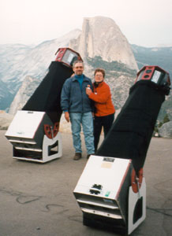

|  |
Romance is certainly in the wintery air. February is a great month for romance. Valentines Day is just one special night this month. How can you bypass the chance to whisper the 6 minutes of Christine Lavin's Planet X song into the ear of your beloved on Clyde Tombaugh's birthday, February 4th? Or observe Jupiter's four biggest and brightest moons on Galileo's birthday on the 15th? Copernicus was born on February 19th -a full moon night this month - the best night to view the gorgeous rays of his namesake crater on the moon! Zeppo Marx was born on the 25th. You can do what ever you like on his birthday. Tell silly jokes and make bad puns, perhaps? And on the 29th, it's national leap day! What a month! There's even a partial solar eclipse over Antartica on the 5th, if you want to practice snuggling to keep warm.
There's no reason not to mix astronomy and romance, as long as you observe a few simple rules of the road. I've collected some of these from personal experience, and some from friends who shall remain nameless.
Music: Music can be good and it can also be very bad. If you are fond of new age music that never ends, and your love interest isn't, you may find that (s)he has gone on a long hike in the dark. Choose your music carefully. Perhaps saving the music for the drive home is the best advice. Why not just leave it home in the first place, and make your own music?
Food: Warm stuff like coffee or hot chocolate or Windsor 1996 Merlot are very good things to bring. Decadent treats like chocolate chip cookies (not the kind that come in a plastic tray from the grocery store) or brownies or anything chocolate are very smart choices. Huge cashews make me swoon - they are especially good with that Merlot! I'll bet I'm not the only one who loves chocolate and hot things on a cold night. The combination of fat and caffeine may extend your evening if you are lucky!
Personal Space: One of the real smart romantic tips involves helping your beloved to the eyepiece. It may involve holding his hands or steadying his backside while he negotiates a ladder. Or gently touching her shoulders, to assist in the positioning of eye to eyepiece. It is acceptable to remain close to your paramour during these trips to the eyepiece. It is also acceptable to lean close and whisper sweet NGC's into her ear. "That's NGC 7331, isn't it lovely?" or "Can you see how close the small companion is? Don't they look nice together?"
Sharing Telescopes: If you both have telescopes, don't show off and quickly grab that galaxy he has been hunting for the past half hour. Express great pleasure at the sight through her telescope before saying, "Why don't you take a look at the same object through MY telescope, dearest?"
Packing up: It is advisable and preferable, if you must drop an eyepiece or telescope part, to do this with your OWN equipment. This is especially important when transporting mirrors, at least on the first date.
When is it time to go (but you don't want to): If your beloved is prone to falling asleep, gently cover him with lots of warm things, so you can keep on observing for another hour.
When it is time to go (and you really want to): Pack up your telescope, sit in the car, and play that new age music!
I hope you all have a wonderful February observing with your sweetheart. Make every moon your honey moon in one way or another. I know I plan to do just that - every month!